Regression
How early do Colorado shows go on sale, and can a straight-line model tell an electronic night from the rest?
Overview
This tab uses two regression models. They look alike but answer different kinds of questions. Linear regression predicts a number. It fits ŷ = b0 + b1x1 + … + bpxp, where b0 is the intercept and each coefficient bj is how much the prediction changes when xj goes up by one and the other features stay the same. The coefficients are chosen by least squares: the difference between a real value and the line, y − ŷ, is called the residual, and the line is the one with the smallest sum of squared residuals (Figure 1). Squaring keeps misses above and below the line from cancelling out, and it punishes big misses more. How good the fit is gets measured with the RMSE (the typical size of a miss, in the units of y) and with R² = 1 − SSR/SST, the share of the variation in y that the model explains (1 = perfect, 0 = no better than always guessing the average).
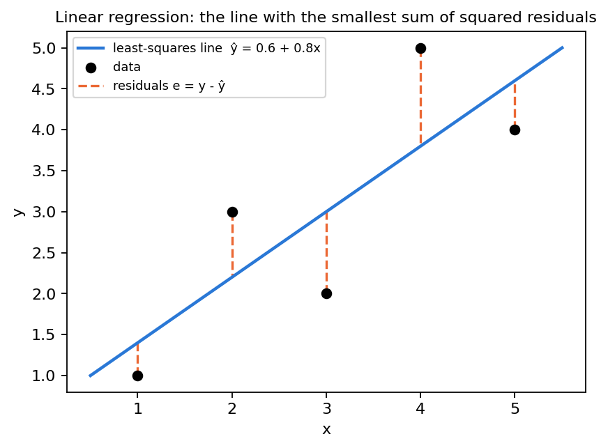
Logistic regression predicts a class (yes or no, 1 or 0). A straight line is a bad fit for a 0/1 label, because it runs above 1 and below 0 and cannot be read as a probability (Figure 2, left). Logistic regression keeps the same linear score, z = b0 + b1x1 + …, but passes it through the sigmoid, p = 1 / (1 + e−z). The sigmoid turns any number into a value between 0 and 1, so p can be read as P(y = 1 | x) (Figure 2, right). A score of z = 0 gives p = 0.5, large positive scores give p close to 1, and large negative scores give p close to 0. The probability becomes a class with a cutoff: predict 1 if p ≥ 0.5 (that is, if z ≥ 0), otherwise 0. Unlike linear regression there is no formula for the coefficients; they are found by maximizing the likelihood of the training labels (minimizing the log loss) step by step.
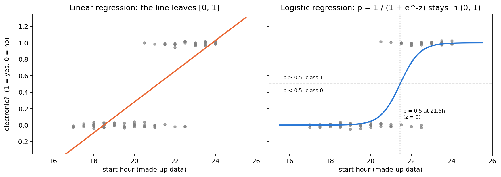
The two models differ in what they predict (a number vs a probability and a class), in how they are fitted (least squares vs maximum likelihood) and in what a coefficient means. In linear regression bj is a change in y itself. In logistic regression the model is linear in the log-odds, log(p / (1 − p)) = z, so bj is a change in the log-odds and ebj is the number the odds are multiplied by. On this tab, linear regression predicts how many days before a show tickets go on sale, and logistic regression returns to the question from the Naive Bayes tab: is an event electronic?
Data Prep
Both models are supervised, so they need labeled data, split into a training set to fit the model and a testing set to measure it. The two sets are disjoint (no event is in both). A model scored on events it was fitted on is scored on memory, not prediction, and its error would look smaller than it really is.
Linear regression: a numeric target
Linear regression needs a numeric target. Here it is
lead_time_days: the number of days between tickets going on sale and the
show. This is the “how far in advance are events announced?” question from
the Introduction. The data are all Colorado events collected from 20 September to
23 November 2026 (no duplicates, no cancellations) that have a real on-sale date (1,024 events, 176 of them electronic).
Placeholder dates such as “on sale 9999-12-31” are removed with the
0–400 day rule from Module 1. The features are:
is_electronic(1 = electronic),start_hour(20.5 = 8:30 pm),fri_sat(1 = Friday or Saturday) andlineup_size(number of artists);headliner_shows_log2: log2(1 + the headliner’s upcoming Ticketmaster events), a measure of how busy, and roughly how big, the headliner is. With log2, +1 means “twice as many shows”;days_out: days from 20 September 2026 (the first collection) to the show. A show far in the future that is already listed must have gone on sale early, so this keeps the calendar date from hiding inside the other coefficients;venue: a category. Linear regression needs numbers, so the venue is one-hot encoded: one 0/1 column for each of the 17 venues with at least 15 events, with the smaller venues (178 events) as the baseline, where every venue column is 0 (Figure 4).
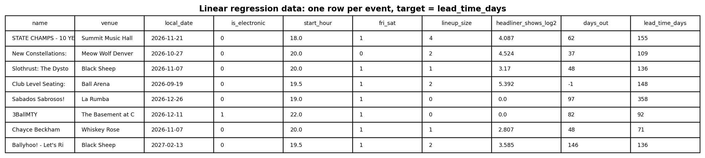
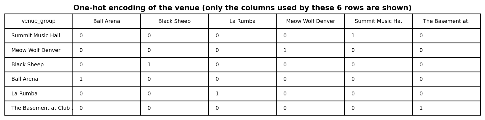
The 1,024 events were split with train_test_split into 70% for training
(716 events) and 30% for testing (308 events), stratified so both sets have the same
share of electronic events.
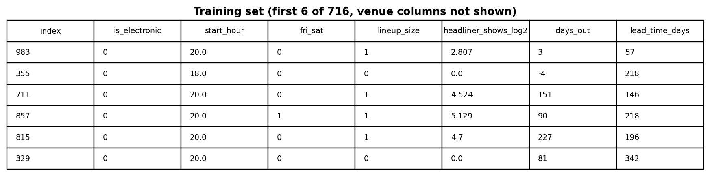
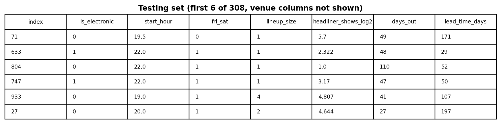
Logistic regression: a two-class label
Logistic regression needs a label with two classes. It uses the same
label as the Naive Bayes and Decision Trees tabs, electronic = 1 or
not_electronic = 0, on the same balanced sample (480 events, 240 of
each). It also uses the same 24 columns of 0/1 categories as Naive
Bayes (start time, weekday, number of artists, on-sale window and season) and the
exact same training (336) and testing (144) events. So any difference
from Naive Bayes comes from the model, not from the data. One category per group is
dropped as the baseline (Sunday, before 7 pm, 1 artist, on sale 90–180 days
ahead, fall), which leaves 19 columns. Every coefficient then means “compared
with the baseline”. Before fitting, the encoding was checked with 5-fold cross
validation on the training set only. The 0/1 categories scored 0.750 and the
five raw numbers scored 0.732, so the categories were kept.

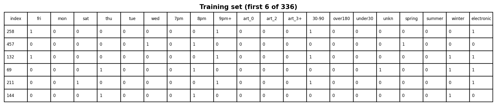
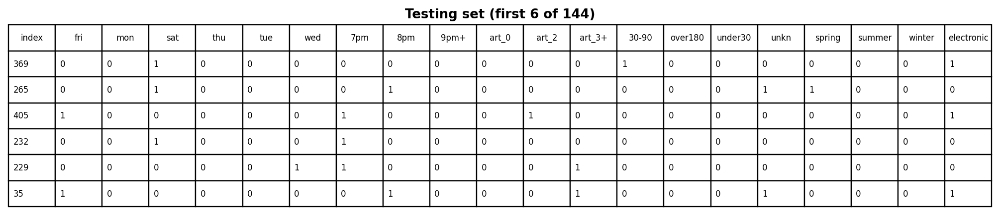
- Linear regression data: exports/module4/lead_time_events.csv · training set: lr_train.csv · testing set: lr_test.csv
- Logistic regression labeled data: exports/module3/events_labeled.csv · training set: logit_train.csv · testing set: logit_test.csv
Code
- lead_time_data.py — builds the lead-time data from the database
- linear_regression.py — one-hot encoding, the split,
LinearRegression, the error measures and the figures - logistic_regression.py —
LogisticRegression, the comparison with Naive Bayes, and the figures - concept_figures.py — Figures 1 and 2
#linear regression
venues = pd.get_dummies(df["venue_group"], prefix="venue").astype(int).drop(columns="venue_other")
X = pd.concat([df[NUMERIC], venues], axis=1)
X_train, X_test, y_train, y_test = train_test_split(X, y, test_size=0.3, random_state=42,
stratify=df["is_electronic"])
lr = LinearRegression().fit(X_train, y_train)
pred = lr.predict(X_test)
np.sqrt(mean_squared_error(y_test, pred)), r2_score(y_test, pred)
#logistic regression (same columns and split as Naive Bayes)
logit = LogisticRegression(max_iter=5000).fit(X_train, y_train)
pred = logit.predict(X_test) #class, using p >= 0.5
prob = logit.predict_proba(X_test)[:, 1] #P(electronic)
accuracy_score(y_test, pred), confusion_matrix(y_test, pred)Results
Linear regression: how early tickets go on sale
| Testing set (308 events) | Value |
|---|---|
| RMSE (typical miss) | 59.0 days |
| MAE (average miss) | 44.8 days |
| R² | 0.46 (training set: 0.52) |
| RMSE of always guessing the training average | 80.8 days |
The model explains 46% of the variation in lead time on events it never saw. Its typical miss is about two months, against almost three months for always guessing the average. Training and testing R² are close (0.52 and 0.46), so the model is not overfitting. Figure 10 shows where it works and where it does not. Electronic events (orange) sit in the lower left: they go on sale late, and the model predicts this well. The biggest misses are shows that went on sale almost a year ahead and were predicted at around 150 days. Many of them are recurring weekly nights that a venue puts on sale for a whole season at once, such as La Rumba’s “Sábados Sabrosos” or Vultures’ weekly Goth Night. The residuals (Figure 11) are centered on zero with no curve, so a straight line is a reasonable shape, but the largest misses are all positive: shows predicted at 100–200 days that really sold almost a year ahead. Nothing in a single listing says that it is one night of a season-long series.
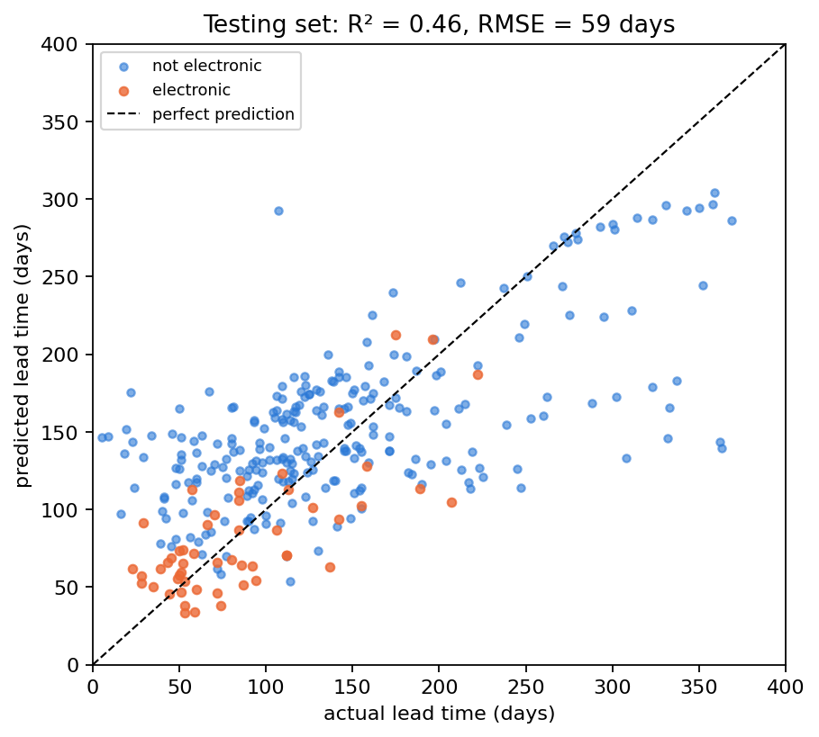
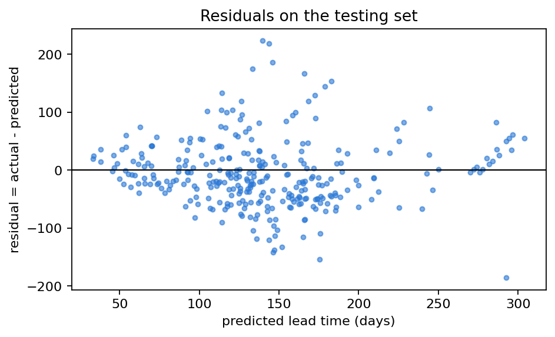
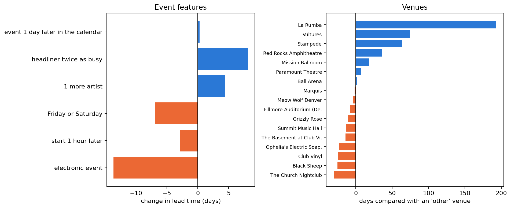
Two coefficients in plain words:
- Electronic event: −13.7 days. Take two shows at the same
venue, on the same kind of night, with the same lineup size, an equally busy headliner
and the same date. If one of them is electronic, its tickets go on sale about
two weeks later. On raw averages the gap is much bigger: electronic events
go on sale 83 days ahead on average and other music 151 days ahead (a model with only
is_electronicgives −72.8 days). So most of the gap comes from where and when electronic music is played (late nights at clubs such as The Church and Club Vinyl and its Basement, which all have negative venue coefficients), not from the genre itself. - Headliner twice as busy: +8.2 days. When the headliner has twice as many upcoming Ticketmaster shows, tickets go on sale about 8 days earlier. Busy touring acts are booked and announced as part of a tour, so they go on sale earlier than local or occasional performers.
The other coefficients agree. Each hour later the show starts takes about 3 days off the lead time, a Friday or Saturday show goes on sale about a week later, and each extra artist adds about 4 days. The venue matters most of all. Red Rocks (+36 days) and the Mission Ballroom (+18) sell far ahead, the clubs sell 2–4 weeks later than the small-venue baseline, and venues with season-long weekly nights (La Rumba +192, Vultures +74, Stampede +63) sell earliest of all.
Logistic regression: is it electronic?
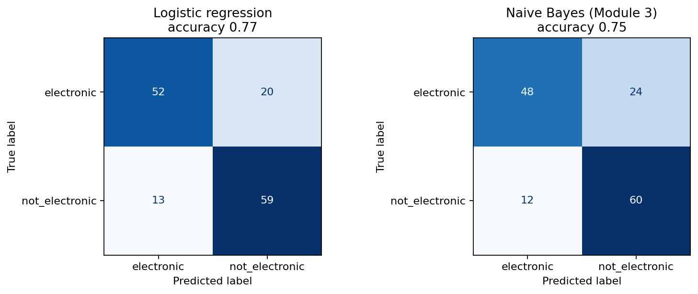
Logistic regression classified 111 of the 144 test events correctly (accuracy 0.771). It found 52 of the 72 electronic events and 59 of the 72 others. Figure 14 shows how it decides. Every test event has a linear score z, the sigmoid turns it into P(electronic), and the event is called electronic when that probability is above 0.5. The mistakes are the blue events above the line and the orange events below it. A few non-electronic shows get a very high score because they look exactly like a club night (late, on a weekend, announced a few weeks ahead), and the early-evening electronic concerts get a low one.
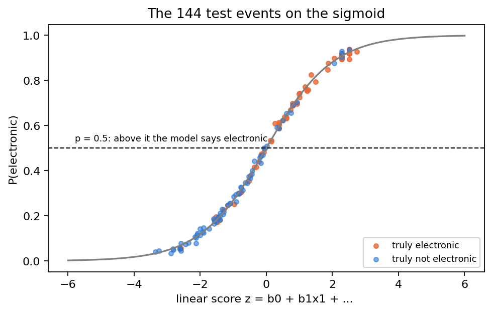
A worked example (the same event as on the Naive Bayes tab): a Saturday show starting at 9 pm or later, with one artist, going on sale less than 30 days ahead, in the fall. The intercept is b0 = −2.240, and the three categories that are “on” add 1.446 (Saturday), 1.794 (9 pm+) and 1.039 (under 30 days), so z = 2.039 and p = 1 / (1 + e−2.039) = 0.885. The model calls it electronic, with less certainty than Naive Bayes (0.98).
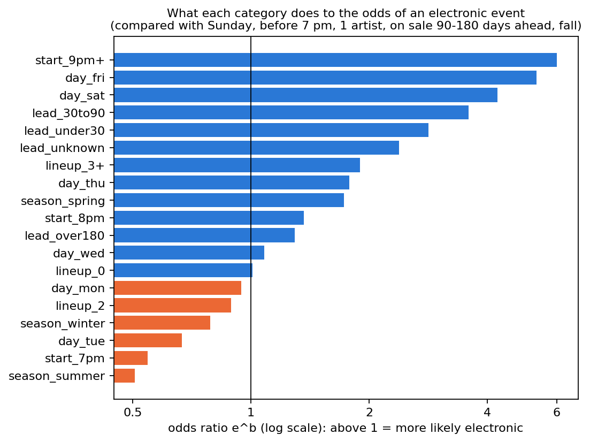
What one coefficient means for the odds. The coefficient of
start_9pm+ is b = 1.79, so e1.79 = 6.0:
with everything else the same, a show that starts at 9 pm or later has
six times the odds of being electronic compared with one that starts before
7 pm. For example, odds of 1 to 2 (p = 0.33) become 3 to 1 (p = 0.75). Friday (×5.3)
and Saturday (×4.3) come next, then going on sale less than three months ahead
(×2.8 to ×3.6). A 7 pm start roughly halves the odds (×0.55).
Logistic regression vs Naive Bayes
| Same 24 columns, same 144 test events | Accuracy | Electronic found | Not electronic found | ROC AUC |
|---|---|---|---|---|
| Naive Bayes (Module 3) | 0.750 (108) | 48 of 72 | 60 of 72 | 0.803 |
| Logistic regression | 0.771 (111) | 52 of 72 | 59 of 72 | 0.820 |
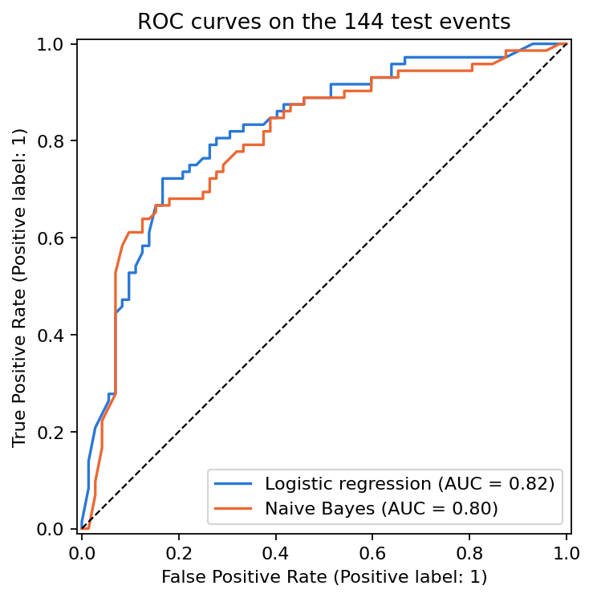
Logistic regression is slightly ahead: 3 more correct events, 4 more electronic events found for one more false alarm, and a slightly higher AUC. But the two models agree on 133 of the 144 events, and on 144 events one event is 0.7 percentage points, so the gap is within noise. The difference that matters is how they learn. Naive Bayes treats each category as independent evidence and multiplies the evidence together, so it double-counts categories that go together (late starts and weekend nights), which is why its probabilities are so extreme (0.98 in the example). Logistic regression fits all the coefficients together, so when two categories carry the same information it shares the credit between them, and its probabilities are more moderate.
Conclusions
Electronic shows in Colorado go on sale about two months later than other music: a median of 64 days ahead against 135. For a listener, that means a monthly check misses many of them. Most of the gap comes from the venues and the nights where electronic music is played. At the same venue and on the same kind of night, the difference is only about two weeks. Big touring headliners and large rooms such as Red Rocks sell months ahead, while club nights are announced a few weeks out. Lead time is therefore partly predictable (46% of its variation) from information in every listing, and the venue is the most useful piece. Logistic regression confirms the Naive Bayes result with a different model: a 9 pm start, a Friday or Saturday and a short on-sale window each multiply the odds that a show is electronic several times over, and the format of a listing alone identifies an electronic night about 3 times out of 4 (77%). For the recommender, this means a newly listed late weekend show with a short on-sale window can be flagged as a likely electronic night, and as a show to check often, before anyone has labeled its genre.